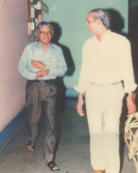

Research And Training Unit For Navigational Electronics (NERTU)
About NERTU
The Department of Electronics(DoE), Government of India,
recognizing the
importance of Navigational Electronics to the country and the specific needs of the
Department of Civil Aviation and the Indian Air Force, decided to create a national centre for
expertise in this area. Proposals were invited, and the one submitted by the Department of
Electronics and Communication Engineering, Osmania University was selected. Thus, the
Research and Training Unit for Navigational Electronics(NERTU) came into being
on 1st April, 1982 as a sponsored project of the DoE. It continued to enjoy this status until
September 1992.
In recognition of the excellent services rendered by it to the user organizations, then the Government of Andhra Pradesh has made it as permanent establishment, a research centre of Osmania University by funding its recurring expenditure. The first Advisory Committee (1982-1987) was headed by the former President of India, Bharata Ratna Dr. A.P.J. Abdul Kalam, who was then the Director of Defence Research Development Laboratory (DRDL), Hyderabad. Today, NERTU is the focal point for research and training, in the frontier areas of Navigational Electronics in India. It is the first University centre to work in the area of Global Positioning System(GPS) and GPS Aided Geo Augmented Navigation(GAGAN) System. Dr.A.P.J.Abdul Kalam referred the “Development of Signal processing algorithms for NAG missile by NERTU”, in his autobiography – “Wings of Fire”.
In recognition of the excellent services rendered by it to the user organizations, then the Government of Andhra Pradesh has made it as permanent establishment, a research centre of Osmania University by funding its recurring expenditure. The first Advisory Committee (1982-1987) was headed by the former President of India, Bharata Ratna Dr. A.P.J. Abdul Kalam, who was then the Director of Defence Research Development Laboratory (DRDL), Hyderabad. Today, NERTU is the focal point for research and training, in the frontier areas of Navigational Electronics in India. It is the first University centre to work in the area of Global Positioning System(GPS) and GPS Aided Geo Augmented Navigation(GAGAN) System. Dr.A.P.J.Abdul Kalam referred the “Development of Signal processing algorithms for NAG missile by NERTU”, in his autobiography – “Wings of Fire”.

Objective
1) Conducting research in the frontier areas of Navigational Electronics, Signal
Processing
and Communication, covering the current state-of-the art technologies.
- Propose the projects for funding from government agencies and industries and then execute the sponsored and consultancy projects.
- Publication of Research Results in Technical Reports and Journals.
- Presentation of Research Results in Conferences.
- Organizing short term courses, workshops, symposia and conferences for engineers, scientists, academicians and students at PG and PhD level.
- Guiding B.E., M.E., and Ph.D. students by Identifying of research topics based on the requirements of the sponsoring agencies and on-going research work at national and international level in the areas of Signal Processing, Communication and Navigation.
About Osmania University (OU)
Osmania University is a collegiate public state university located
in Hyderabad, Telangana, India. Mir Osman Ali Khan, the 7th Nizam of
Hyderabad, issued a firman calling for its creation on 29 August
1917. It is the third oldest university in southern India, and the
first to be established in the erstwhile Kingdom of Hyderabad.
It was the first Indian university to use Urdu as a language of instruction, although with English as a compulsory subject. As of 2012, the university hosts 3,700 international students from more than 80 nations.
Osmania is one of the largest university systems in the world with over 300,000 students on its campuses and affiliated colleges. The Osmania Medical College was once a part of the Osmania University System. However, it is now under the supervision of Kaloji Narayana Rao University of Health Sciences.
It was the first Indian university to use Urdu as a language of instruction, although with English as a compulsory subject. As of 2012, the university hosts 3,700 international students from more than 80 nations.
Osmania is one of the largest university systems in the world with over 300,000 students on its campuses and affiliated colleges. The Osmania Medical College was once a part of the Osmania University System. However, it is now under the supervision of Kaloji Narayana Rao University of Health Sciences.
History of OU
In 1917, Sir Akbar Hydari, in a memorandum to the Education
Minister, emphasized the need to establish a university in Hyderabad
with Urdu as the medium of instruction, "as it is the language of
the widest currency in India". On April 26, 1917, the Nizam of
Hyderabad Mir Osman Ali Khan issued a firman to establish the
Osmania University.
The university began functioning in 1918 in a building adjacent to the Nizam College at Basheerbagh. Arts and theology were the only two faculties offered, and the first batch consisted of 225 students and 25 faculty members.
The government invited Patrick Geddes and Edwin Jasper to set up a permanent campus of the university. Geddes surveyed prospective locations and presented his report in 1923. Jasper drew up the building plans and the Nizam laid the foundation stone for the campus on July 5, 1934. After Jasper left Hyderabad, the state architect Zain Yar Jung supervised the construction of the campus.
The university began functioning in 1918 in a building adjacent to the Nizam College at Basheerbagh. Arts and theology were the only two faculties offered, and the first batch consisted of 225 students and 25 faculty members.
The government invited Patrick Geddes and Edwin Jasper to set up a permanent campus of the university. Geddes surveyed prospective locations and presented his report in 1923. Jasper drew up the building plans and the Nizam laid the foundation stone for the campus on July 5, 1934. After Jasper left Hyderabad, the state architect Zain Yar Jung supervised the construction of the campus.

Know About Director
Prof. P. Laxminarayana
Dr. P. Laxminarayana (PLN) is the Professor and Director of
NERTU,
OU. He got his M.E. and Ph.D. from the Department of Electronics and Communication
Engineering,
Osmania University in 1994 and 2000, respectively. He has been working for NERTU, Osmania
University, since 1994. His passion is Technology Development, industry-institute
interaction
and start-ups. He is involved in executing several sponsored and Consultancy projects from
public and Private Organizations as Principal investigator and co-investigator. He has taken
lien from university from July 2003 to June 2005 to establish and lead a 13-member team of
"DSP
and Audio Processing Technology" group at Hyderabad Development Centre (HDC) of Analog
Devices
Inc. (ADI). Later, he was also a consultant to ADI and Lantiq Communications India Pvt. Ltd.
By
recognizing his services at HDC-ADI, ADI funded the Department of ECE to establish a
Multimedia
and ADSPs laboratory at Osmania University. Three groups of students/alumni members of OU
are
working in collaboration with him to develop new products and planning for start-ups. He was
faculty cum coordinator in organizing more than 20 short-term courses in the areas of Signal
Processing, Communication and Navigation. He has published more than 40 Journal and
conference
papers and technical reports. He has guided more than 40 ME students and 2-PhD Students. His
areas of research interest are the development and implementation of Signal and Image
Processing
algorithms for Communications, Navigation and Object Recognition. At present, he is working
on
the development of a GNSS software Receiver, Integration of GNSS with other navigation
systems,
ASR and TTS systems, Face Detection and Recognition, and Instruments for Biotech Industries.